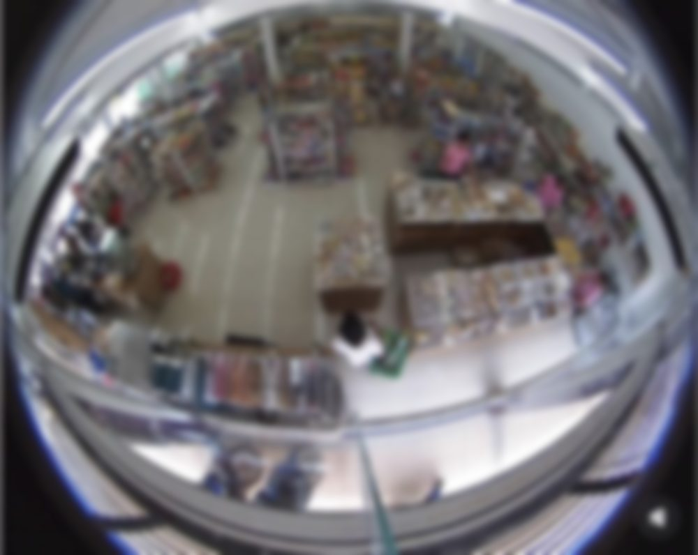

---- -- -- --:--:--
● REC
在线 VIEWERS
·
累计 TOTAL
·
CLICK / 点击镜头 进入档案 — CAM-08 FISHEYE
监控室
MONITOR ROOM · B7
◄ CLICK A SCREEN — 点击屏幕查看档案 ►
SIGNAL INTERRUPTED
▣ TOPO 拓扑
✕
END OF FILE — 点击查看其他屏幕
TOPOLOGY MAP · 素材拓扑
✕
现实实体空间
REAL SPACE
虚拟叙事空间
VIRTUAL SPACE
客观纪实素材
DOCUMENTARY
艺术思辨意象
CONTEMPLATIVE
X · 空间形态 — Y · 素材属性 / 点击方框节点切换左侧档案